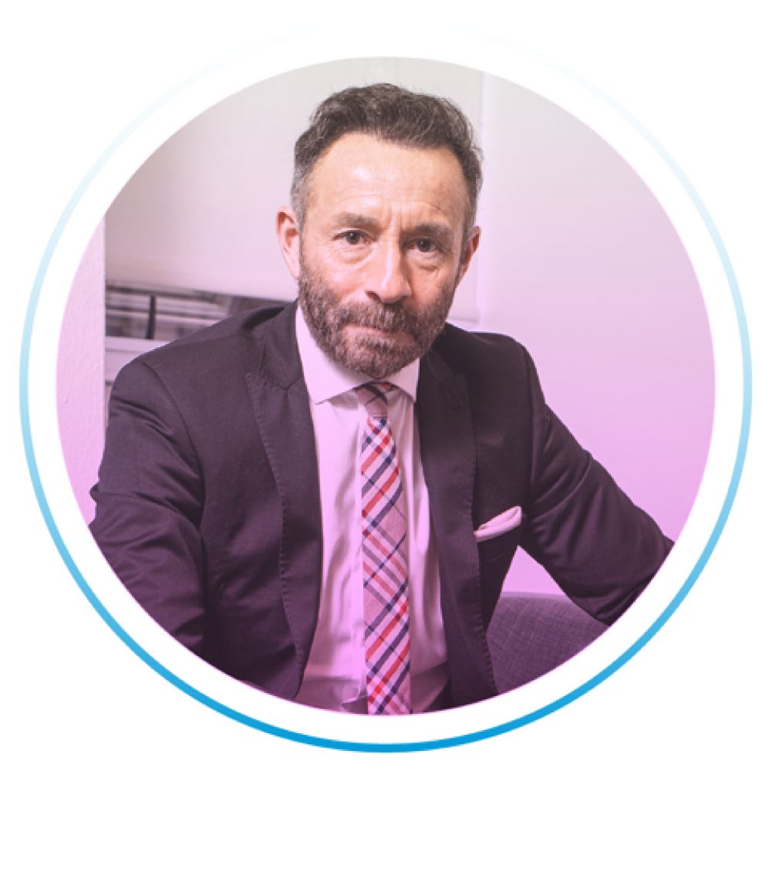
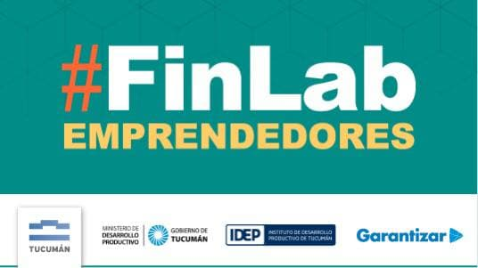

Un programa que brinda herramientas para impulsar el acceso equitativo al financiamiento a través de beneficios como eventos de networking y capacitaciones financieras gratuitas.
Además, para celebrar el 25° aniversario de Garantizar, durante el mes de marzo, bonificamos el 50% de comisión en todas nuestras garantías.
En el marco del programa “Garantizar Inclusión”, comienzan Comunidad PyME y #FinLab Emprendedores, propuestas segmentadas para cada tipo de proyecto, con el objetivo de fortalecer las capacidades del sector productivo en el territorio argentino a través de un ciclo federal de encuentros de intercambio, asesoramiento y capacitaciones.
La iniciativa busca generar alianzas con impacto positivo en las comunidades locales y estará a cargo del reconocido economista y consultor Juan Enrique.
Continúa en febrero de 2022 en alianza con el Ministerio de Producción de San Juan para continuar con el resto de las provincias con una frecuencia mensual. Modalidad: Seminario presencial en cada localidad, cupo sujeto a aforo.
Panorama económico
Economía regional
Programas y herramientas
Espacio consultivo
Panorama económico
Economía regional
Programas y herramientas
Espacio consultivo

Continúa en febrero de 2022, un espacio de formación virtual con fines prácticos para que profesionales independientes, y pequeños comerciantes, tengan acceso a herramientas para potenciar sus negocios y hacerlos crecer. Modalidad: Capacitación virtual a través de plataforma ZOOM.
¿Qué necesito para hacer crecer mi proyecto y dónde lo consigo?
Herramientas financieras
Espacio consultivo
Agenda
Jornada de networking
Hacé de tu emprendimiento una empresa
19/11/21 - 10 hs
Oportunidades comerciales para fortalecer tu proyecto y claves para ampliar tus horizontes hacia la exportación.

Tucumán
Capacitación Financiera
14/10/21 - 16 hs
Capacitación financiera con foco en la economía regional para emprendedores y pequeños comercios. Online, abierta y gratuita.
WEBINAR
#FinLab Finanzas 2021
15/03/21 - 15 hs
Laboratorio financiero: Inclusión, inversiones y estrategias.
WEBINAR
Perspectiva 2021
10/12/20 – 11.30 hs
Reactivación PyME, sistema financiero, informes, datos para la acción, instrumentos para el relanzamiento productivo.
WEBINAR
Perspectiva 2021
10/12/20 – 11.30 hs
“Reactivación PyME, sistema financiero, informes, datos para la acción, instrumentos para el relanzamiento productivo.”
WEBINAR
19N: Día Internacional de la Mujer Emprendedora
19/11/20 - 15 hs
“Claves para fortalecer proyectos, PyMEs y liderazgo”
WEBINAR
Garantizar Inclusión
15/10/20 - 15 hs
“Herramientas financieras con una mirada igualitaria.
WEBINAR
Nuevas Herramientas para mujeres PyMEs
01/10/20 - 18 hs
“Informes, líneas crediticias y oportunidades de financiamiento.
Capacitaciones
Garantizar SGR
#19N Día Internacional de la Mujer Emprendedora (2da. edición) – Jornada de networking “Hacé de tu emprendimiento una empresa”.
Referentes 2021 – Vinculación, diálogo y transformación. 1er encuentro de networking para empresas argentinas junto a ABAPPRA y referentes del sector público y privado.
#FinLab Capacitación Financiera – Customer Experience. Encuentro 10 (25/08/21). A cargo de:Alvaro Casalins y Griselda Garibotti.
#FinLab Capacitación Financiera – Planificación fiscal. Encuentro 9 (11/08/21). A cargo de: Eugenio Orco y Lisandro Sigifredo.
#FinLab Capacitación Financiera – E-Commerce y herramientas digitales para potenciar negocios. Encuentro 8 (28/07/21). A cargo de: Nelson Galindo y Francisco Mato.
#FinLab Capacitación Financiera – Cultura de Innovación y Transformación Digital. Encuentro 7 (14/07/21). A cargo de: Américo de Paula.
#FinLab Capacitación Financiera – Mercado de Capitales II. Encuentro 6 (23/06/21). A cargo de: Fernando Luciani, Mónica Erpen, Nadia Montenegro y Rosana Montarcé.
#FinLab Capacitación Financiera – Mercado de Capitales I. Encuentro 5 (09/06/21). A cargo de: Mónica Erpen.
#FinLab Capacitación Financiera - Rentabilidad del Proyecto y Fuentes de Financiación. Encuentro 4 (19/05/21). Docentes: Julia Laura Pérego y Juan Valassina.
#FinLab Capacitación Financiera - Análisis del Estado Financiero. Encuentro 3 (05/05/21). A cargo de: Cra. Julia Laura Pérego.
#FinLab Capacitación Financiera - Planificación Estratégica II. Encuentro 2 (21/04/21). Docentes: Juan Valassina y Federico Filgueira.
#FinLab Capacitación Financiera - Planificación Estratégica I. Encuentro 1 (07/04/21). Docentes: Juan Valassina y Federico Filgueira.
Garantizar realizó el encuentro #FinLab FINANZAS 2021 junto a grandes referentes del sector, para tratar un tema que cada día requiere mayor visibilidad en la agenda pública y privada como es la inclusión financiera.
Candelaria Botto, economista y docente, te cuenta distintas formas de financiar tu emprendimiento o microempresa.
Candelaria Botto, economista y docente, te explica todo lo que tenés que saber a la hora de pedir financiamiento para tu negocio.
Candelaria Botto, economista y docente, comparte los pasos fundamentales para analizar de modo sencillo el estado financiero de una PyME o proyecto.
Candelaria Botto, economista y periodista especializada, explica cómo financiarse a través de una SGR y los pasos concretos para empezar a convertir tu negocio en una empresa.
Estefanía Pozzo, periodista especializada en economía, comparte las opciones de inversión que tienen las PyMEs argentinas en el mercado local.
Estefanía Pozzo, periodista especializada, te cuenta cómo sumar mujeres en cargos de decisión importantes puede aumentar hasta un 20% las ganancias de tu empresa.
Estefanía Pozzo, periodista especializada en economía, expone sobre todos los instrumentos que existen en el mercado para obtener financiamiento.
Estefanía Pozzo, periodista especializada en economía, explica brevemente cómo funciona una SGR y cómo potenciar tu negocio.
Webinar: Perspectiva 2021
Webinar: #19N Día Internacional de la mujer emprendedora
Webinar: “Claves financieras: Desafíos y Oportunidades en Argentina”
¿Qué es una SGR y cómo beneficia a una empresa?
¿Cuáles son las herramientas que ofrece una SGR para acceder al financiamiento ? Garantías bancarias, garantías bursátiles.
Créditos para monotributistas y autónomos – Garantizar Digital
Workshop: "Estrategias para proyectar la fase de retorno al trabajo"
Webinar: Garantizar Inclusión – “Los sistemas financieros y el liderazgo de las mujeres”
#19N Día Internacional de la Mujer Emprendedora (2da. edición) – Jornada de networking “Hacé de tu emprendimiento una empresa”.
Referentes 2021 – Vinculación, diálogo y transformación. 1er encuentro de networking para empresas argentinas junto a ABAPPRA y referentes del sector público y privado.
#FinLab Capacitación Financiera – Customer Experience. Encuentro 10 (25/08/21). A cargo de:Alvaro Casalins > y Griselda Garibotti.
#FinLab Capacitación Financiera – Planificación fiscal. Encuentro 9 (11/08/21). A cargo de: Eugenio Orco y Lisandro Sigifredo.
#FinLab Capacitación Financiera – E-Commerce y herramientas digitales para potenciar negocios. Encuentro 8 (28/07/21). A cargo de: Nelson Galindo y Francisco Mato.
#FinLab Capacitación Financiera – Cultura de Innovación y Transformación Digital. Encuentro 7 (14/07/21). A cargo de: Américo de Paula.
#FinLab Capacitación Financiera – Mercado de Capitales II. Encuentro 6 (23/06/21). A cargo de: Fernando Luciani, Mónica Erpen, Nadia Montenegro y Rosana Montarcé.
#FinLab Capacitación Financiera – Mercado de Capitales I. Encuentro 5 (09/06/21). A cargo de: Mónica Erpen.
#FinLab Capacitación Financiera - Rentabilidad del Proyecto y Fuentes de Financiación. Encuentro 4 (19/05/21). Docentes: Julia Laura Pérego y Juan Valassina.
#FinLab Capacitación Financiera - Análisis del Estado Financiero - Encuentro 3 (05/05/21). A cargo de: Cra. Julia Laura Pérego.
#FinLab Capacitación Financiera - Planificación Estratégica II. Encuentro 2 (21/04/21). Docentes: Juan Valassina y Federico Filgueira.
#FinLab Capacitación Financiera - Planificación Estratégica I. Encuentro 1 de 8 (07/04/21). Docentes: Juan Valassina y Federico Filgueira.
Garantizar realizó el encuentro #FinLab FINANZAS 2021 junto a grandes referentes del sector, para tratar un tema que cada día requiere mayor visibilidad en la agenda pública y privada como es la inclusión financiera.
Candelaria Botto, economista y docente, te cuenta distintas formas de financiar tu emprendimiento o microempresa.
Candelaria Botto, economista y docente, te explica todo lo que tenés que saber a la hora de pedir financiamiento para tu negocio.
Candelaria Botto, economista y docente, comparte los pasos fundamentales para analizar de modo sencillo el estado financiero de una PyME o proyecto.
Candelaria Botto, economista y periodista especializada, explica cómo financiarse a través de una SGR y los pasos concretos para empezar a convertir tu negocio en una empresa.
Estefanía Pozzo, periodista especializada en economía, comparte las opciones de inversión que tienen las PyMEs argentinas en el mercado local.
Estefanía Pozzo, periodista especializada en economía, comparte las opciones de inversión que tienen las PyMEs argentinas en el mercado local.
Estefanía Pozzo, periodista especializada, te cuenta cómo sumar mujeres en cargos de decisión importantes puede aumentar hasta un 20% las ganancias de tu empresa.
Estefanía Pozzo, periodista especializada en economía, expone sobre todos los instrumentos que existen en el mercado para obtener financiamiento.
Estefanía Pozzo, periodista especializada en economía, explica brevemente cómo funciona una SGR y cómo potenciar tu negocio.
Webinar: Perspectiva 2021
Webinar: #19N Día Internacional de la mujer emprendedora
Webinar: “Claves financieras: Desafíos y Oportunidades en Argentina”
¿Qué es una SGR y cómo beneficia a una empresa?
¿Cuáles son las herramientas que ofrece una SGR para acceder al financiamiento ? Garantías bancarias, garantías bursátiles.
Créditos para monotributistas y autónomos – Garantizar Digital
Workshop: "Estrategias para proyectar la fase de retorno al trabajo"
Webinar: Garantizar Inclusión – “Los sistemas financieros y el liderazgo de las mujeres”
Webinar: “Nuevas herramientas para mujeres PyMEs”
Webinar: “Herramientas financieras con una mirada igualitaria”